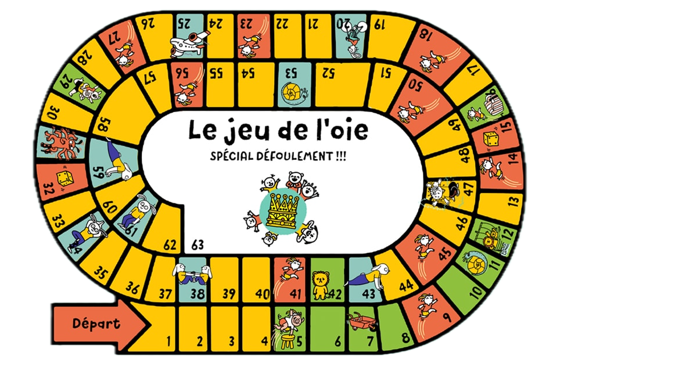
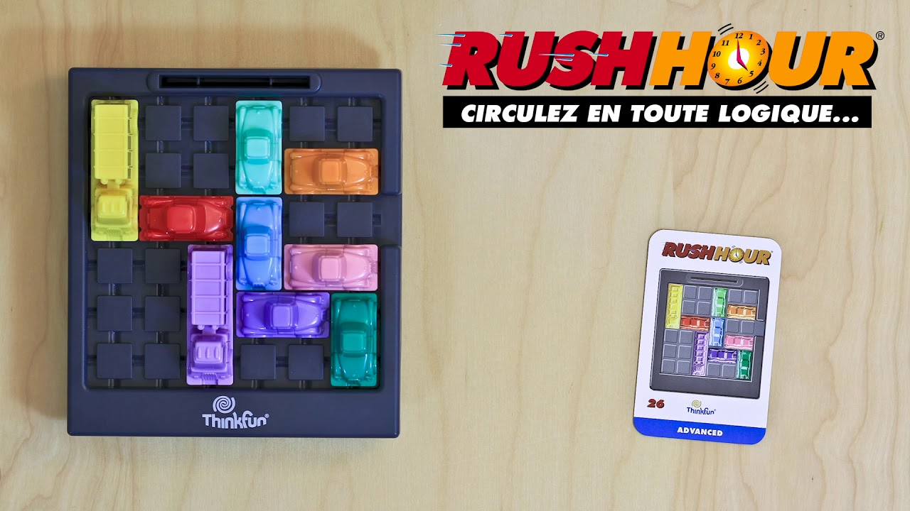

Jeu Python de Tic_Tac_Toe
Un jeu classique dévéloppé en console. interface simple et amusante.
Voir sur Github

Jeu de L'oie
Jeu de l’Oie développé en Java console avec gestion des règles, des joueurs et des cases, utilisant la programmation orientée objet.
Voir sur Github

Jeu de RushHour
Rush Hour développé en Python avec Tkinter, gestion des véhicules, des niveaux et des déplacements, utilisant la programmation orientée objet et un algorithme de résolution automatique.
Voir sur Github
Script d'automatisation
Script en Python pour automatiser le tri de fichiers dans un dossier.
Télécharger le script